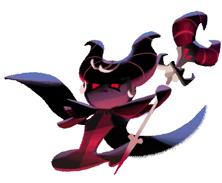
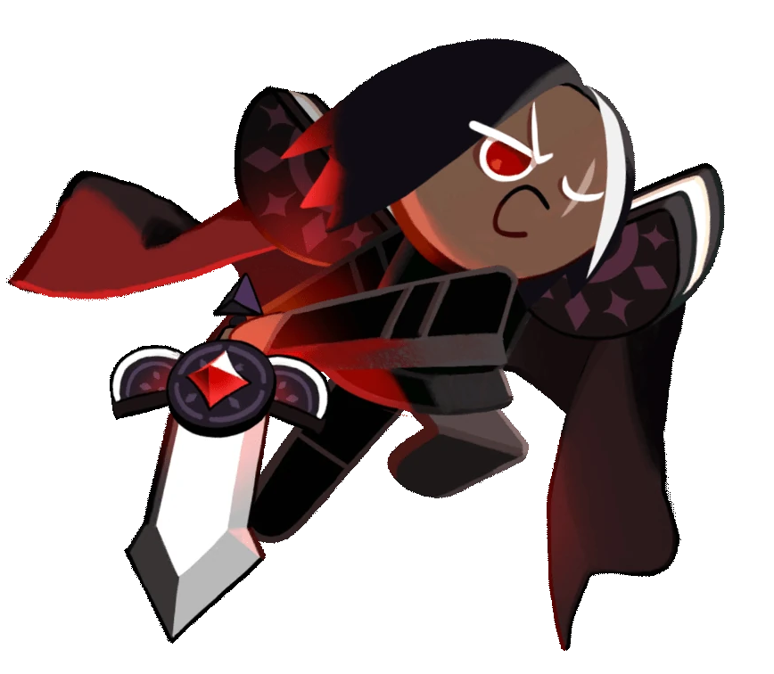

Galleta de Regaliz
Magia
"Es imprudente interponerse en mi camino... ¡Jeje!"

Galleta de Granada
Soporte
"¡Por mi Maestra!"

Galleta Hechicera Oscura
???
"No te resistas a tus tentaciones."

Galleta de Chocolate Oscuro
Carga
"Cuando desperté, la oscuridad me rodeaba."

Galleta de Hongo Venenoso
Bombardero
"Oooh... Nuevo amigo... ¿Quieres un Hongo?"